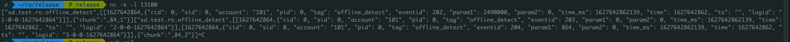
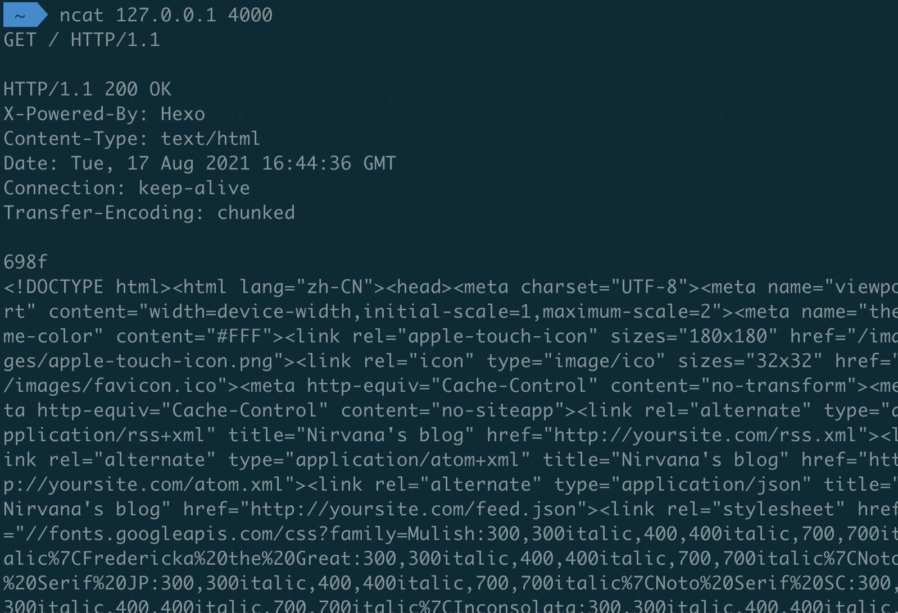
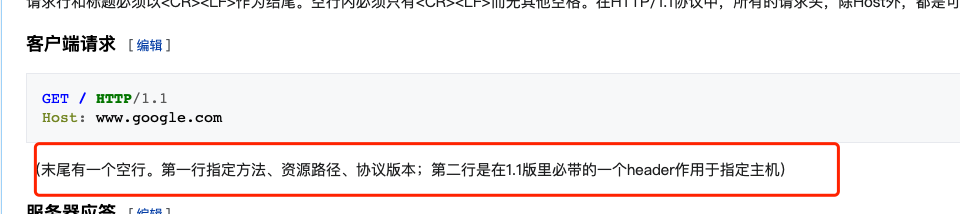
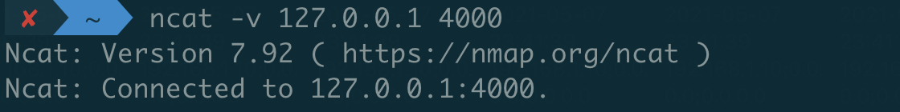

最近为了测试一个端口的连通，第一次接触到了 ncat 这个指令，做个记录～主要参考了 ncat 官网的手册 ncat-man 和《一文让你熟练掌握 Linux 的 ncat (nc) 命令》。
# 1.ncat
ncat 指令全称是 netcat，通过它可以实现很多网络相关功能，如监听、连接端口等。
在大多数 Debian 发行版中， nc 是默认可用的，它会在安装系统的过程中自动被安装。 但是在 CentOS 7/RHEL 7 的最小化安装中， nc 并不会默认被安装。 你需要用下列命令手工安装。
> yum install nmap-ncat -y |
# 2. 所有选项
以下是 ncat 指令的所有选项
Ncat 7.92SVN ( https://nmap.org/ncat ) | |
Usage: ncat [options] [hostname] [port] | |
Options taking a time assume seconds. Append 'ms' for milliseconds, | |
's' for seconds, 'm' for minutes, or 'h' for hours (e.g. 500ms). | |
-4 Use IPv4 only | |
-6 Use IPv6 only | |
-U, --unixsock Use Unix domain sockets only | |
--vsock Use vsock sockets only | |
-C, --crlf Use CRLF for EOL sequence | |
-c, --sh-exec <command> Executes the given command via /bin/sh | |
-e, --exec <command> Executes the given command | |
--lua-exec <filename> Executes the given Lua script | |
-g hop1[,hop2,...] Loose source routing hop points (8 max) | |
-G <n> Loose source routing hop pointer (4, 8, 12, ...) | |
-m, --max-conns <n> Maximum <n> simultaneous connections | |
-h, --help Display this help screen | |
-d, --delay <time> Wait between read/writes | |
-o, --output <filename> Dump session data to a file | |
-x, --hex-dump <filename> Dump session data as hex to a file | |
-i, --idle-timeout <time> Idle read/write timeout | |
-p, --source-port port Specify source port to use | |
-s, --source addr Specify source address to use (doesn't affect -l) | |
-l, --listen Bind and listen for incoming connections | |
-k, --keep-open Accept multiple connections in listen mode | |
-n, --nodns Do not resolve hostnames via DNS | |
-t, --telnet Answer Telnet negotiations | |
-u, --udp Use UDP instead of default TCP | |
--sctp Use SCTP instead of default TCP | |
-v, --verbose Set verbosity level (can be used several times) | |
-w, --wait <time> Connect timeout | |
-z Zero-I/O mode, report connection status only | |
--append-output Append rather than clobber specified output files | |
--send-only Only send data, ignoring received; quit on EOF | |
--recv-only Only receive data, never send anything | |
--no-shutdown Continue half-duplex when receiving EOF on stdin | |
--allow Allow only given hosts to connect to Ncat | |
--allowfile A file of hosts allowed to connect to Ncat | |
--deny Deny given hosts from connecting to Ncat | |
--denyfile A file of hosts denied from connecting to Ncat | |
--broker Enable Ncat's connection brokering mode | |
--chat Start a simple Ncat chat server | |
--proxy <addr[:port]> Specify address of host to proxy through | |
--proxy-type <type> Specify proxy type ("http", "socks4", "socks5") | |
--proxy-auth <auth> Authenticate with HTTP or SOCKS proxy server | |
--proxy-dns <type> Specify where to resolve proxy destination | |
--ssl Connect or listen with SSL | |
--ssl-cert Specify SSL certificate file (PEM) for listening | |
--ssl-key Specify SSL private key (PEM) for listening | |
--ssl-verify Verify trust and domain name of certificates | |
--ssl-trustfile PEM file containing trusted SSL certificates | |
--ssl-ciphers Cipherlist containing SSL ciphers to use | |
--ssl-servername Request distinct server name (SNI) | |
--ssl-alpn ALPN protocol list to use | |
--version Display Ncat's version information and exit | |
See the ncat(1) manpage for full options, descriptions and usage examples |
# 3. 主要功能
就我目前的经验来说，ncat 常用的功能有这些（目前经验还很少）：
# i. 监听模式
ncat 可以通过 - l 指令可以进入监听模式，监听一个连接：
> ncat -l (-k) port |
通过以上指令，我们可以监听对应端口的连接，从而模拟一个服务器连接。-k 是可选项，ncat 默认在连接断开以后会关闭，添加 - k 参数以后，则会强制其保持服务。
以下就是开启服务后收到了数据：

###ii. 连接模式
ncat 添加 - l 可以模拟服务器，去掉 - l 以后则可以进入连接模式，模拟客户端，去连接一个服务器端口。
> ncat ip port |
在通过 GET 等方法，指定地址和 HTTP 协议，便可以获取端口数据。
如下，则是是用 ncat 获取了本地的博客首页的网页信息。

不过这里有个注意点，输完请求后需要有个空行，主机才会返回结果。这是 http 协议的特性决定的。

因为 http 请求有多行，为了标记请求结束，http 指定末尾为一个空行。至于第二行的主机，应该是因为 ncat 连接时已经指定，所以不需要 host 信息就能获取返回了。
##4. 通用选项
ncat 主要的功能就是上面的两种模式，除此之外常用的可能是一些通用的选项。
- -v：即 --verbose，有 - v 选项之后，操作时便会有输出可以用来测试连接等。

- -u，--udp、-4、-6 等：ncat 默认使用 tcp 协议，通过这些选项可以指定 udp、ipv4、ipv6 等协议。
# 5. 其他
ncat 还有一些其他用途。
- 比如通过 - e 进入操作模式，可以输入 bash、sh 等指令:
> ncat -l 10000 -e /bin/bash |
- 通过重定向可以收发文件:
receiver: | |
> ncat -l 8080 > file.txt | |
sender: | |
> ncat 192.168.1.100 8080 --send-only < data.txt |
- 可以通过管道实现代理，以下可以将 8080 的所有连接转发到 192.168.1.200 的 80 端口。
> ncat -l 8080 | ncat 192.168.1.200 80 |
不过这些很多都可以有更好的如 ssh、scp 等指令，以我目前经验觉得，可能正常情况是用不到这些的。
# 6. 总结
ncat 是一个功能强大的指令，包含了很多网络相关的功能，在我们测试网络连接时还是非常有用的～